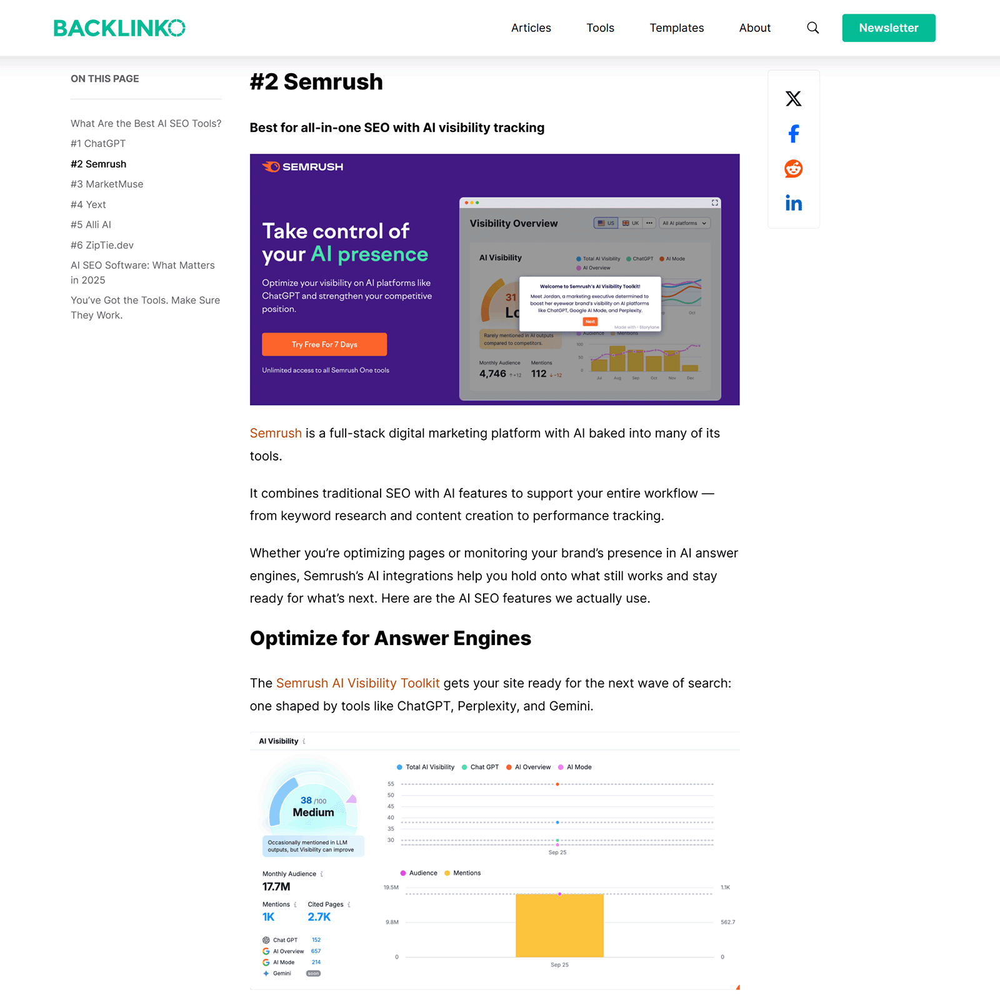

第三方权威信号怎么建设：媒体、榜单、评测和社区
作者: 老白（邻里GEO架构师）
·
·
阅读时长: 8 分钟
结论先行 (Executive Summary)：
官网负责定义自己，第三方权威信号负责证明这种定义不是自说自话。媒体、榜单、评测和社区分别提供叙事、比较、验证和真实使用语境。有效的第三方信号必须与官网定义一致，否则会增加AI理解噪声。建设外部证据应优先选择相关、可信、可索引、可长期访问的来源。
一、核心结论：第三方信号的价值在于可信证据，而不是曝光数量
第三方权威信号怎么建设，关键不是把同一篇稿件发到更多地方，而是让媒体、榜单、评测和社区从不同角度证明同一个品牌实体和能力边界。
在AI搜索中，官网说“我是谁”很重要，但模型还会寻找外部来源验证这种说法是否稳定。外部证据越清晰、一致、可索引，AI越容易把品牌纳入可信答案材料。
真正有效的第三方信号，应能回答四个问题：谁在说、说了什么、依据是什么、是否与官网定义一致。
二、为什么第三方权威信号重要

第三方来源从媒体、榜单、评测和社区四个方向补充品牌可信证据。AI搜索生成答案时，通常不会只依赖品牌自述。它需要在多个来源中确认名称、类别、能力、客户类型、使用效果和风险边界。第三方资料能帮助模型判断品牌是否真实、是否相关、是否可信。
对中小品牌尤其如此。官网可以把定义写清楚，但缺少外部佐证时，AI可能仍然倾向引用更知名、更容易验证的品牌。第三方信号的作用，是降低模型采用你作为答案来源的风险。
不过，外部信号必须服务于理解，而不是制造声量。大量内容相互复制、标题夸张、信息不一致，只会让AI更难判断真实情况。
三、媒体、榜单、评测和社区分别承担什么角色
不同第三方来源适合证明不同问题。媒体报道适合解释品牌背景和行业意义，榜单适合提供比较位置，评测适合验证产品能力，社区讨论适合呈现真实使用语境。
企业不应把所有外部合作都当成“发稿”。更好的做法是先明确想证明什么，再选择相应来源。
| 来源类型 | 适合证明的问题 | 建设重点 |
|---|
| 媒体报道 | 品牌为什么值得关注 | 事实准确、背景完整、可索引 |
| 行业榜单 | 品牌在同类中处于什么位置 | 评价口径透明、分类准确 |
| 产品评测 | 能力是否经得起验证 | 过程清楚、限制明确、结论克制 |
| 社区讨论 | 真实用户如何使用和评价 | 场景具体、避免诱导和伪造 |
四、建设第三方信号前，先统一官网定义
第三方信号不是独立工程。外部资料如果引用了不同的品牌名称、业务分类、产品描述和目标客户，会让AI看到多个版本的你。越铺越多，冲突越多。
因此，企业应先准备标准品牌资料包：一句话定义、产品类别、核心能力、适用场景、客户案例、禁止夸大的表述和可公开引用的事实。媒体、榜单、评测和合作伙伴都应基于同一套资料理解品牌。
这不是控制外部评价，而是减少事实层面的歧义。外部来源仍然可以独立判断，但基础实体信息应保持一致。
- 统一公司全称、品牌名、产品名和英文名。
- 统一品类归属，避免在不同稿件中变成不同赛道。
- 统一能力边界，不把愿景写成已经具备的能力。
- 统一案例事实，避免客户名称、行业和结果口径冲突。
五、如何选择值得投入的第三方来源
值得投入的第三方来源，至少要满足相关性、可信度、可访问性和稳定性。一个高度相关但不可索引的闭门材料，对AI搜索帮助有限；一个可索引但低质量的转载站，也难以提供可信证据。
选择媒体和榜单时，要看它是否覆盖目标行业、是否有清晰编辑或评价机制、页面是否长期可访问、是否允许事实细节充分呈现。选择评测和社区时，要看是否能提供真实体验和可复核过程。
如果预算有限，优先建设少量高质量、能长期访问、与官网定义一致的来源，而不是追求短期铺量。
六、如何避免第三方信号变成语义噪声
第三方信号最大的风险，是本来想证明品牌，最后却制造了多个互相矛盾的版本。常见噪声包括标题党、过度包装、旧业务描述残留、产品能力夸大、评价口径不透明和重复转载。
企业应定期审计外部页面：哪些来源被AI引用，哪些描述已经过时，哪些第三方页面与官网冲突。能更新的更新，不能更新的就在官网FAQ或资料页中澄清。
不要伪造社区口碑、购买虚假评测或诱导榜单评价。这类内容即使短期可见，也会破坏长期信任，并增加AI错误引用风险。
| 噪声类型 | 表现 | 处理方式 |
|---|
| 重复软文 | 多站点复制同一稿件 | 减少铺量，补充独立事实 |
| 描述冲突 | 品类和能力说法不一致 | 回到官网标准定义纠偏 |
| 过时信息 | 旧产品、旧价格仍被引用 | 更新可控来源并增加说明 |
| 评价不透明 | 榜单口径不清 | 优先选择规则公开的来源 |
七、结论：外部证据是品牌GEO的第二现场
第三方权威信号的建设，本质上是在官网之外建立品牌证据链。官网负责定义，外部来源负责验证，二者共同降低AI理解和引用品牌的成本。
企业要把媒体、榜单、评测和社区纳入同一套GEO治理：先统一实体定义，再选择高质量来源，最后用AI答案监测外部证据是否真的被采用。
FAQ
Q1：第三方权威信号是不是越多越好？
不是。AI更需要一致、可信、可验证的外部证据，而不是大量重复转载。低质量铺量可能增加收录页面，但也可能制造过时和冲突描述。企业应优先建设少量高相关来源，并确保它们与官网定义保持一致。建设时要把来源质量和信息一致性放在铺量之前。
Q2：媒体报道和行业榜单哪个更重要？
它们解决的问题不同。媒体报道适合解释品牌背景、观点和行业角色；行业榜单适合提供同类比较和分类位置。企业应根据当前缺口选择：如果AI不知道你是谁，先补媒体和官网定义；如果不知道你属于哪个候选集合，再补榜单和评测。
Q3：社区讨论能不能作为AI可信来源？
可以作为使用语境的补充，但不应作为唯一证据。社区内容更适合反映真实问题、用户语言和体验反馈，可信度取决于平台质量、讨论真实性和内容稳定性。企业不能伪造口碑，而应从真实反馈中提炼FAQ和产品改进点。每次合作前都应提供标准资料包，减少外部页面写错品牌和能力。
Q4：外部页面信息过时怎么办？
先分清是否可更新。可控或合作来源应尽快修正；不可控来源则通过官网标准资料页、FAQ、新闻更新和新的第三方材料提供正确信息。AI纠偏需要时间，关键是让新的、可信的一致来源持续覆盖旧信息。如果预算有限，先选择目标客户真正会信任和搜索的垂直来源。
Q5：评测文章应该怎么写才有GEO价值？
有价值的评测应说明测试对象、使用场景、评价维度、过程证据、优点、限制和适用边界。只写夸奖没有参考价值。AI更容易采纳结构清晰、口径透明、结论克制的评测，因为它能被拆解为可信答案材料。社区内容尤其要尊重真实性，不能用伪造口碑换短期可见。
Q6：小品牌没有媒体资源怎么办？
可以从更具体的第三方信号开始，例如客户案例、垂直社区、行业播客、专家访谈、合作伙伴页面和小范围评测。关键不是追求大媒体，而是让目标问题中相关的可信来源开始出现一致描述，并能长期被访问。外部页面上线后，还要监测AI是否真的引用它，而不是只看发布完成。
Q7：如何判断第三方信号已经产生效果？
用固定Prompt监测AI答案中是否引用或复述第三方资料，品牌描述是否更准确，是否进入品类或场景推荐集合。同时检查来源质量和语境。如果只是链接偶尔出现，但答案没有采用其观点，说明证据价值仍然有限。这些信号最终要和官网定义互相支撑，才能形成稳定证据链。